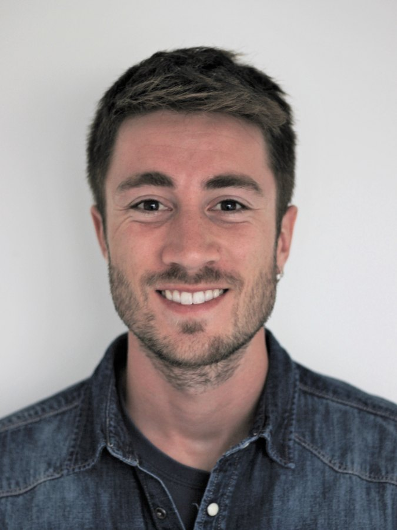
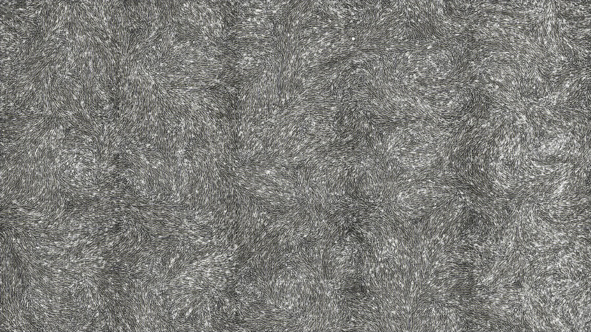

{{ t.title }}
{{ t.body }}
Living Nematic Matter · SOC&SAM · University of Barcelona · IN2UB
Tenure-track Lecturer, Materials Science and Physical Chemistry
Lead, Living Nematic Matter line · SOC&SAM
We study living materials that align like nematic liquid crystals, and use that alignment to control how they flow, generate force, and change shape and fate.
Open to applications from prospective PhD students and postdocs.
Happy to co-write fellowship proposals with strong candidates (MSCA, Beatriu de Pinós, la Caixa, FI-AGAUR or equivalent). Send a CV and a short note on what interests you.
01 · About

Pau Guillamat studied chemistry and applied materials chemistry at the University of Barcelona and completed his PhD in Nanoscience and Nanotechnology there in 2017 (excellent cum laude) with Jordi Ignés-Mullol and Francesc Sagués. His thesis showed how passive liquid crystals and structured interfaces steer the flows of cytoskeletal active gels (PNAS, Nature Communications, Science Advances).
As an HFSP cross-disciplinary fellow with Aurélien Roux at the University of Geneva (2017–2021), he showed that integer topological defects organise the stresses that drive tissue morphogenesis (Nature Materials, 2022). With a Marie Skłodowska-Curie fellowship in Xavier Trepat’s lab at IBEC, he developed substrates that guide cellular nematic order into shape-programmable living surfaces (Science, 2026).
He now teaches at the University of Barcelona and leads the Living Nematic Matter line of Self-Organized Complexity and Self-Assembly Materials (SOC&SAM), at the University of Barcelona and the Institute of Nanoscience and Nanotechnology (IN2UB).
Expertise
02 · Research line
Active matter is made of units that burn chemical energy to do mechanical work. Put enough of them together, whether motor-driven filaments or cells in a monolayer, and they self-organise: they flow, they align, and they develop topological defects in that alignment. The line asks whether those defects can be controlled, and what happens mechanically and biologically when they are.
We can now prescribe orientation in living nematics, a milestone for the field. Prescribed orientation yields reproducible patterns of active forces, which we use to reshape tissues. The aim is a set of design routes from alignment to form and fate, and the bottom-up engineering of living tissues.

{{ t.body }}
03 · Gallery
04 · Publications
Full and up-to-date record on Google Scholar and ORCID.
05 · Career
{{ c.what }}
{{ c.where }}
{{ gr.name }}
{{ gr.funder }} · {{ gr.year }}
Contact
Open to applications from prospective PhD students and postdocs, and happy to co-write fellowship proposals with strong candidates.
pauguillamat@ub.eduDepartment of Materials Science and Physical Chemistry
Faculty of Chemistry, University of Barcelona
Martí i Franquès 1, 08028 Barcelona, Spain
© 2026 Pau Guillamat · Images and movies from the author’s publications in Science (2026) and Nature Materials (2022).